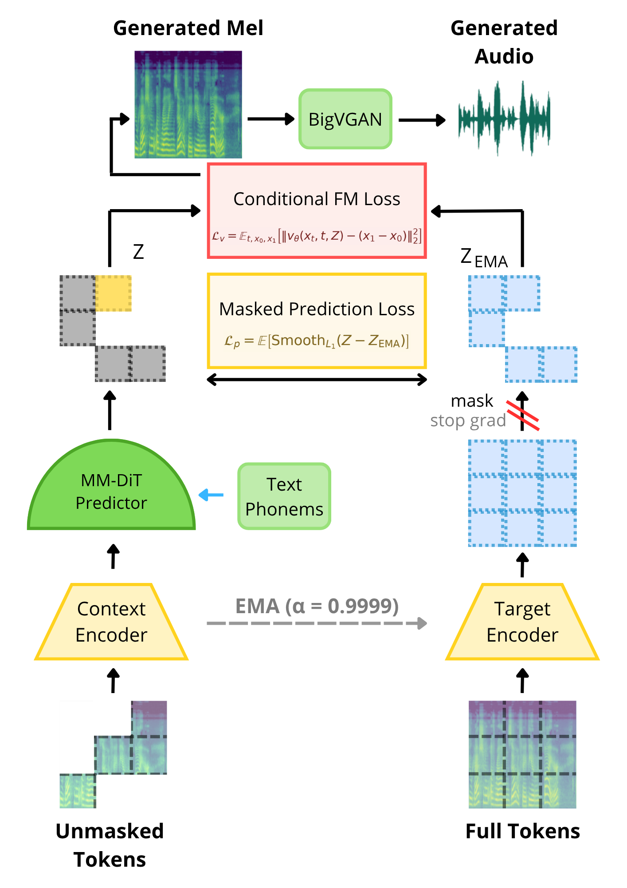
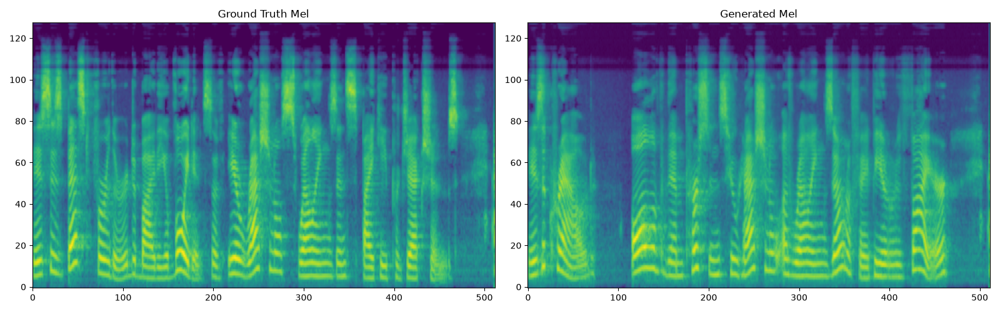
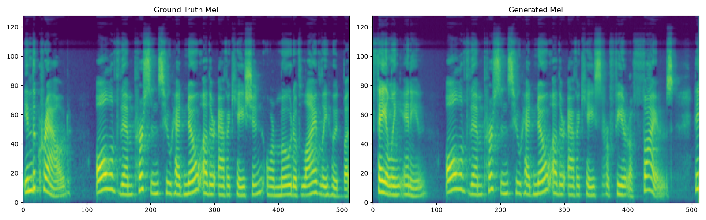
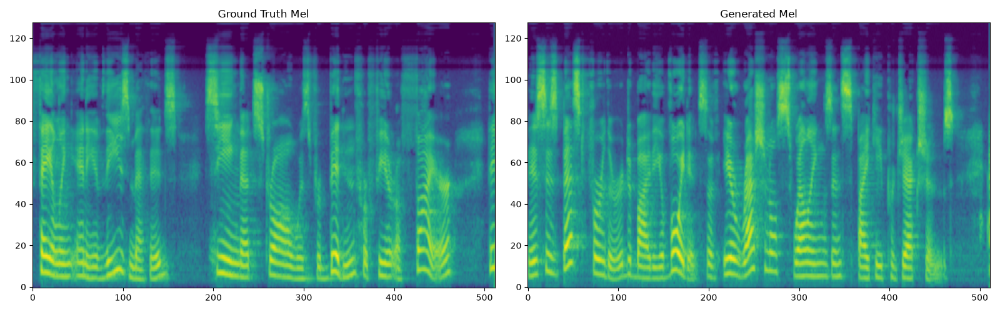

Decoupling abstract phonetic representation learning from continuous acoustic distribution modeling via Joint-Embedding Predictive Architecture (JEPA), MM-DiT, and Continuous Flow Matching.
Generates 128-band Mel-spectrograms natively aligned with BigVGAN v2 neural vocoding, yielding studio-quality speech free from robotic artifacts.
Replaces blurry pixel-level L1/L2 regression with vector velocity field modeling, preserving crisp high-frequency formants.
Captures unvocalized Arabic nuances, geminates (Shaddah), and emphatic consonants with < 4 hours of studio data.
A unified architecture coupling a self-supervised teacher-student latent prediction objective with continuous conditional flow matching.

Unmasked acoustic patches are processed by the Context Encoder, while the full spectrogram is encoded by an Exponential Moving Average (EMA, α=0.9999) Target teacher network with stop-gradients.
Joint multimodal transformer layers concatenate phonemic text tokens and acoustic representations in self-attention, with 1D Rotary Position Embeddings ensuring length-invariant temporal conditioning.
Optimized simultaneously via a Masked JEPA Latent Prediction Loss (Smooth L1 regression) and a Continuous Conditional Flow Matching velocity loss.
Continuous 128-band Mel-spectrograms are decoded into high-fidelity 44.1kHz speech waveforms using anti-aliased periodic Snake activations.
Side-by-side comparison of Ground Truth studio recordings versus Fusion-JEPA generated speech with 44.1kHz BigVGAN vocoding.



Access the complete documentation, peer-reviewed format conference manuscript, comprehensive lab report, and presentation slides.
Complete research manuscript with mathematical derivations, related work, experimental methodology, and quantitative analysis.
In-depth technical report including code listings, hyperparameter configurations, Slurm cluster recipes, and extended analysis.
Official project defense slides structured into Problem Statement, Methodology, Verification Benchmark, and Future Horizons.